Từ nay lớp nhóm (Pilates mat, Yoga, Running Club…) được lên lịch, ghi danh và điểm danh ngay trên app nội bộ, ở trang Lịch Group Class. Bài này đi theo đúng thứ tự công việc trong ngày: mở lịch → tạo buổi → ghi danh → khách check-in → điểm danh.
1. Chưa check-in thì chưa điểm danh được. Nút Điểm danh chỉ mở sau khi khách check-in ở đúng chi nhánh của lớp, trong khoảng 3 giờ trước giờ lớp đến hết lớp. Khách quên check-in thì mời khách ra quầy check-in; trường hợp đặc biệt báo Admin.
2. Ghi danh lớp có phí sẽ trừ class pass. Mỗi lượt ghi danh trừ 1 class pass trong gói (nếu gói có class pass). Huỷ ghi danh hoặc huỷ lớp thì hoàn lại. Lớp FREE không trừ.
3. Huỷ lớp là xoá hết ghi danh. "Khôi phục lớp" trả về một lớp trống.
4. Không ghi danh trùng giờ buổi PT. Hai khung chỉ chạm nhau (lớp xong 13:00, PT bắt đầu 13:00) thì vẫn được.
Chọn đúng chi nhánh ở góc phải trên, rồi mở menu Lịch → Lịch Group Class. Mỗi cột là một ngày, lớp xếp từ sáng đến tối. Ngày hôm nay được tô nền.
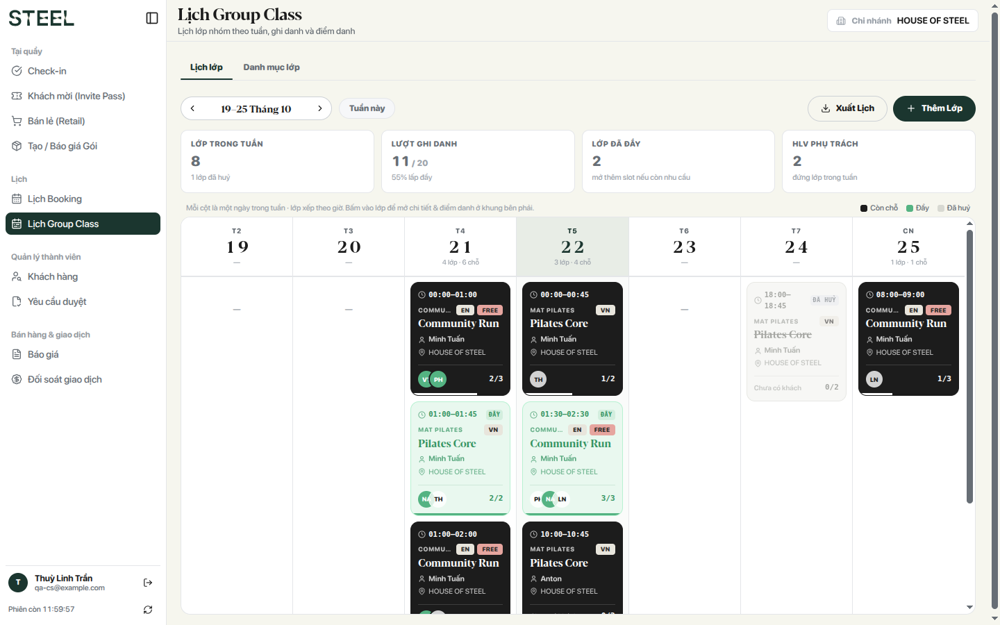
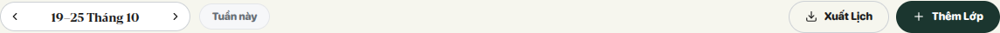
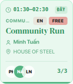
| Màu thẻ | Nghĩa |
|---|---|
| Đen | Còn chỗ |
| Xanh lá, chữ "ĐẦY" | Đủ chỗ, không ghi danh thêm |
| Xám, gạch ngang, chữ "ĐÃ HUỶ" | Lớp đã huỷ |
| Chữ "· ẩn" cạnh tên HLV | Lớp đang ẩn với khách, không lên ảnh lịch |
| Ô tròn xanh ở cuối thẻ | Khách đã được điểm danh có mặt |
Bấm vào thẻ để mở chi tiết lớp ở bên phải, gồm 2 tab: Chi tiết và Ghi danh.
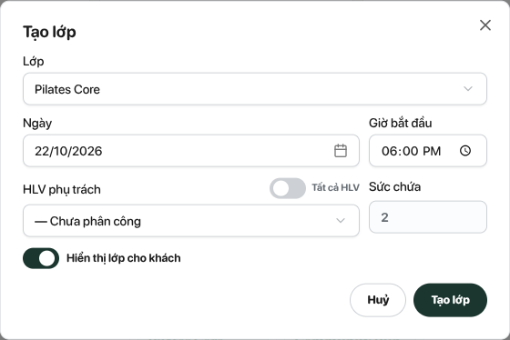
Chưa có chức năng sửa giờ hay đổi HLV của buổi đã tạo. Muốn đổi thì huỷ buổi rồi tạo buổi mới (khách phải ghi danh lại).
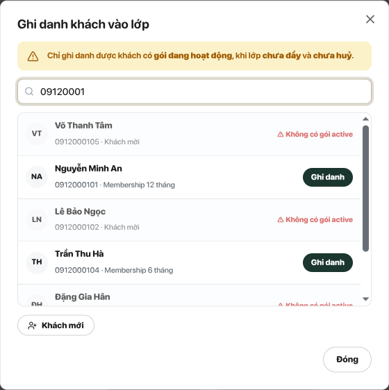
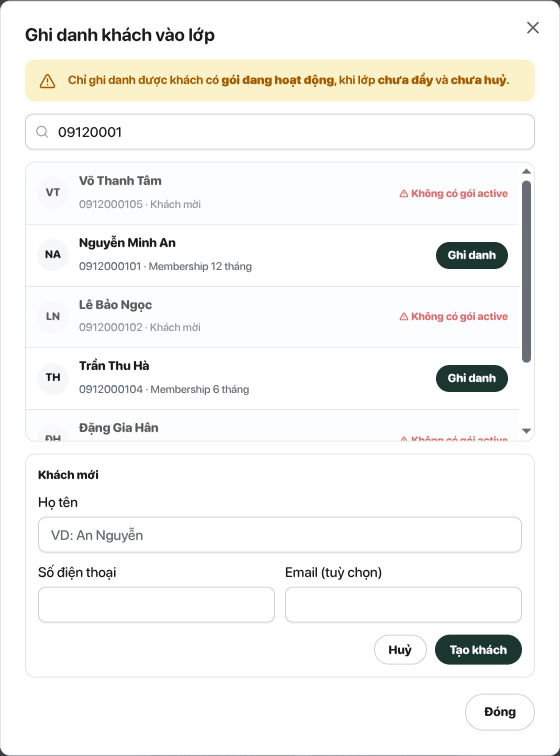
Huỷ ghi danh: tab Ghi danh, bấm biểu tượng thùng rác cuối dòng khách, xác nhận lại. Class pass được hoàn nếu đã trừ.
Check-in khách ở màn Check-in như mọi ngày. Hệ thống tự gắn lượt check-in vào lớp nhóm khách đã ghi danh hôm nay, CS không cần làm gì thêm.
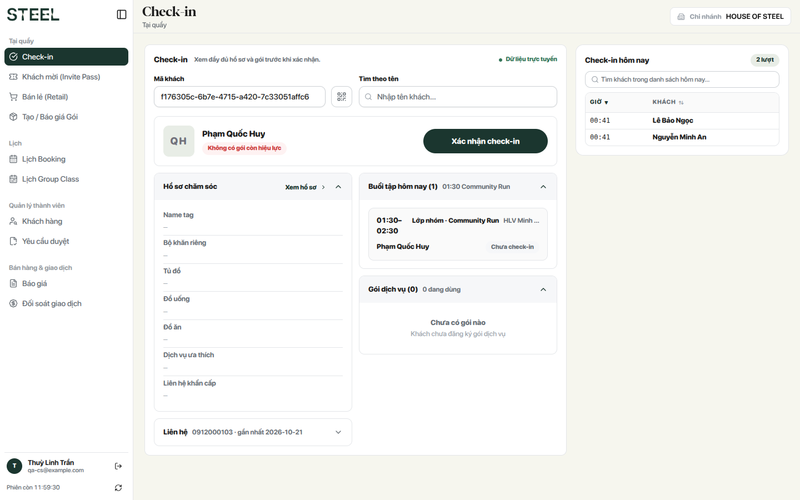
Mở lớp, sang tab Ghi danh. Mỗi khách ở một trong 3 trạng thái:
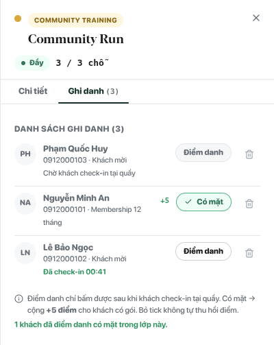
| Dòng khách hiện | Làm gì |
|---|---|
| Chờ khách check-in tại quầy, nút Điểm danh mờ | Mời khách ra quầy check-in |
| Đã check-in HH:mm (chữ xanh), nút Điểm danh mở | Khách vào lớp thì bấm Điểm danh |
| Có mặt (nút viền xanh), kèm +5 | Xong. Khách có gói được cộng 5 điểm |
Điểm thưởng chỉ cho khách có gói đang hoạt động. Khách gói Unlimited đã đủ 50 điểm trong ngày thì không cộng thêm.
Dùng khi khách thật sự có mặt nhưng không check-in được (quên check-in, máy hoặc quầy lỗi). Chỉ Administrator và Admin Manager thấy chữ Chốt điểm danh, và chỉ khi lớp đã bắt đầu.
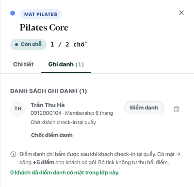
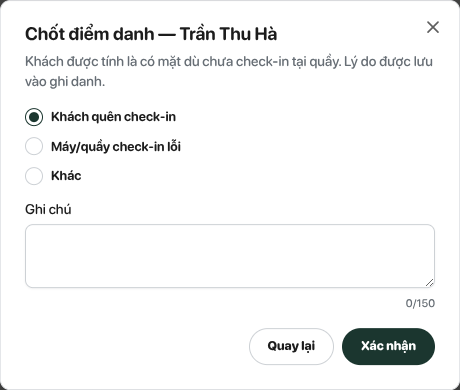
Sau khi chốt, khách thành Có mặt và có nhãn Xác nhận tay kèm lý do. Thao tác được ghi lại để tra cứu sau.
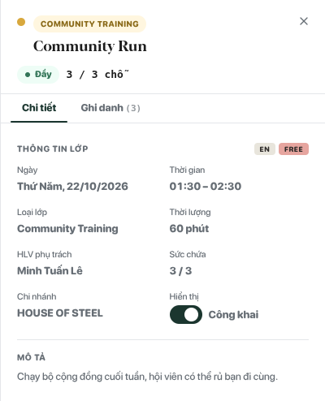
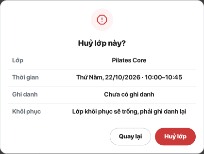
| Việc | Cách làm | Kết quả |
|---|---|---|
| Ẩn / hiện lớp | Tab Chi tiết, công tắc Hiển thị | Lớp ẩn không hiện cho khách, không lên ảnh lịch |
| Huỷ lớp | Huỷ lớp, đọc hộp hỏi lại, xác nhận | Xoá mọi ghi danh, hoàn class pass, thẻ lớp chuyển xám "Đã huỷ" |
| Khôi phục lớp | Mở lớp đã huỷ, Khôi phục lớp, xác nhận | Lớp mở lại nhưng trống |
Tab Danh mục lớp liệt kê các lớp đang dùng. Mỗi thẻ có loại lớp, tag ngôn ngữ / FREE, thời lượng, sức chứa, số buổi trong tuần đang xem, mô tả ngắn. Bấm Giáo án để xem danh sách bài tập (nếu có).
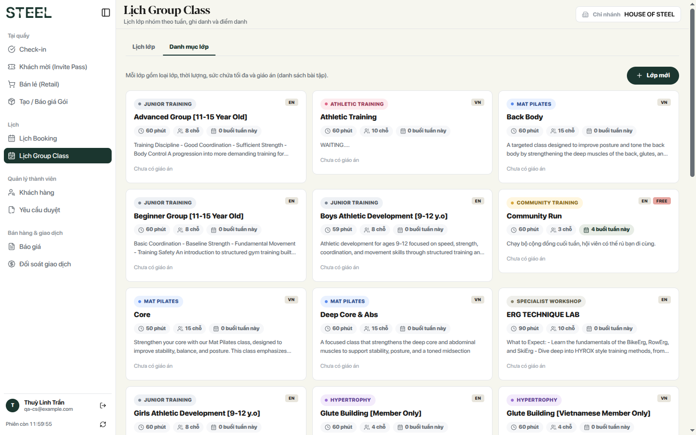
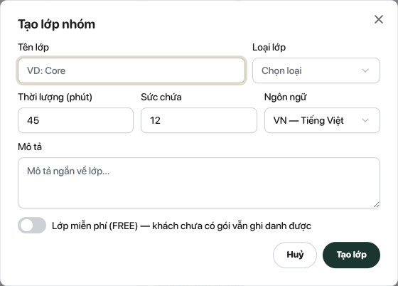
Bấm Xuất Lịch trên thanh công cụ: app tải về ảnh PNG "GROUP SCHEDULE" của tuần đang xem. Lớp đang ẩn không có trên ảnh; app báo số lớp bị bỏ ra.
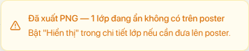
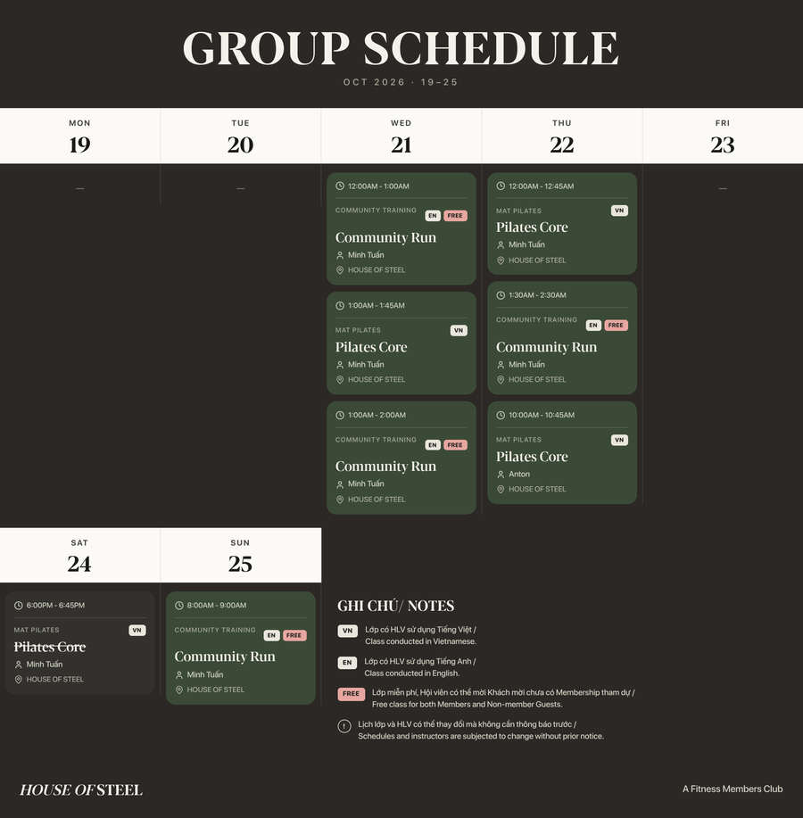
Mời khách ra quầy check-in (vẫn trong khung 3 giờ trước đến hết lớp là được), rồi mở lại lớp và bấm Điểm danh. Khách đã về hoặc quầy lỗi thì báo Admin dùng Chốt điểm danh.
Đóng rồi mở lại lớp. Vẫn chưa được thì kiểm tra: khách check-in đúng chi nhánh của lớp chưa, quầy đã chọn chi nhánh chưa, và giờ check-in có nằm trong khung 3 giờ trước giờ lớp đến hết lớp không.
Chỉ đi được lớp FREE. Ghi danh khách vào lớp FREE (tạo Khách mới nếu chưa có hồ sơ). Hôm học, khách check-in tại quầy như bình thường: nút Xác nhận check-in mở được nhờ lớp FREE. Ngoài khung giờ của lớp thì hệ thống báo "Khách chưa có gói còn hiệu lực".
Không ghi danh thêm được. Báo OM mở thêm buổi; sức chứa theo lớp trong danh mục.
Hệ thống không cho ghi danh. Dời buổi PT ở Lịch booking hoặc chọn lớp khác giờ. Hai khung chỉ chạm nhau thì được.
Chưa có trên app. Huỷ buổi, tạo buổi mới với giờ / HLV đúng, rồi ghi danh lại khách. Nhớ báo khách.
| Thông báo | Nghĩa | Làm gì |
|---|---|---|
| Khách chưa check-in tại quầy — chưa điểm danh được | Chưa có lượt check-in hợp lệ | Mời khách check-in ở quầy đúng chi nhánh; đặc biệt thì báo Admin chốt tay |
| Khách chưa có gói còn hiệu lực — chỉ ghi danh được lớp FREE | Khách không có gói đang hoạt động | Mời mua gói, hoặc chọn lớp FREE |
| Khách chưa có gói còn hiệu lực — mời khách mua gói… (ở màn Check-in) | Khách không có gói và không có lớp FREE đang mở hôm nay | Mời mua gói; khách mời thì kiểm tra đã ghi danh lớp FREE hôm nay ở chi nhánh này chưa |
| Lớp đã đầy — mở thêm buổi nếu còn nhu cầu | Hết chỗ | Báo OM mở thêm buổi |
| Khách đã có buổi khác trong khung giờ này | Trùng buổi PT / 2:1 / trị liệu | Dời buổi PT hoặc chọn lớp khác giờ |
| Khách có lớp group trùng giờ (ở Lịch booking) | Buổi PT đè lên lớp khách đã ghi danh | Chọn giờ khác, hoặc huỷ ghi danh lớp trước |
| Khách đã có trong danh sách lớp này | Đã ghi danh rồi | Không cần làm gì |
| Lớp đã huỷ — không ghi danh hay điểm danh được | Lớp đã huỷ | Khôi phục lớp (lớp trống) rồi ghi danh lại |
| SĐT đã được sử dụng | Số đã thuộc một tài khoản | Tìm khách theo số đó thay vì tạo mới |
| Khách đã check-in — dùng nút Điểm danh thường | Admin chốt tay cho khách đã check-in | Bấm Điểm danh |
Khách tự ghi danh trên member app mà bị trùng giờ buổi PT sẽ chỉ thấy lỗi chung. Khi khách hỏi, giải thích là đang có buổi PT cùng giờ.
| Vai trò | Được làm |
|---|---|
| CS, OM, Admin Manager, Admin | Tạo / huỷ / khôi phục buổi, ẩn / hiện, ghi danh, huỷ ghi danh, điểm danh, tạo lớp mới, xuất lịch |
| Admin Manager, Admin | Thêm: Chốt điểm danh không cần check-in |
| HLV | Không dùng trang Lịch Group Class, không điểm danh |